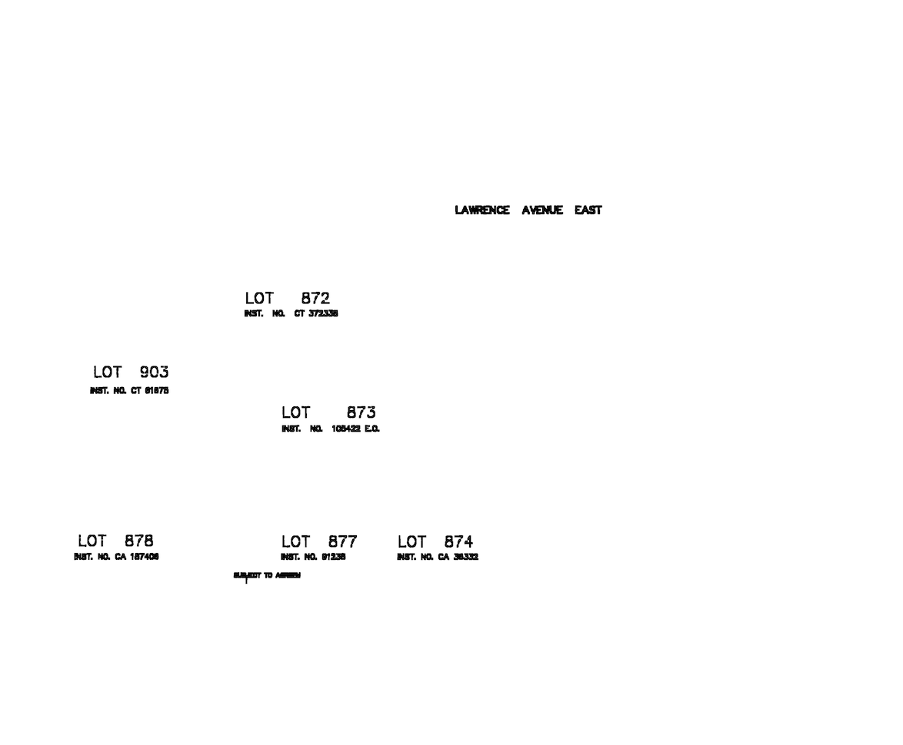

With recognized letters and large glyphs removed, dilate the remaining glyphs for later model inference. The "not big" file was manually edited to remove extraneous glyphs since the objective of this project is to infer letters and not differentiate between "signal and noise" (though the latter would be great and the methodology accommodates for a possible improvement in this capability)
from PIL import Image
import numpy as np
from scipy import ndimage
Again, Disclosure: I have edited the output from "Remove Large Glyphs" to only include stencil fonts. Inferring all possible glyphs up until this point would have been a labour intensive task as all labels are checked manually for accuracy.
# image with high-ratio features, as well as Tesseract text, removed
filename = './data/output/04_66428_not_big_h_letters.png'
drawing = Image.open(filename)
# convert the PIL image to an numpy array
drawer = np.array(drawing)
# invert the image for dilation
drawed = np.logical_not(drawer)
# horizontal structure
h_struct = np.array([
[False, False, False],
[True, True, True],
[False, False, False]])
# vertical structure
v_struct = np.array([
[False, True, False],
[False, True, False],
[False, True, False]])
# copy the array for dilation
modified = drawed.copy()
# three horizontals,
modified = ndimage.binary_dilation(modified, structure=h_struct, iterations=3)
# then three veticals
modified = ndimage.binary_dilation(modified, structure=v_struct, iterations=3)
# create a new, blank, white image
modification = np.full(modified.shape, 255, np.uint8)
# apply the dilated filter
modification[modified] = 0
# convert the numpy array to a PIL image
im = Image.fromarray(modification)
# save the image
im.save('./data/output/05_66428_dilated.png')
In this image, the stencil fonts have been dilated so they are now connected to other segments within the letter. This step provides a quick way to 'group' segments together for later inference by the SVM model. Without this step, a sequential process would be created to iterate through the file comparing the current centroid with all other centroids within a reasonable distance.

Specifically, note how letter segments in 'LAWRENCE' are now dissolved. Also, some of the adjacent letters are dissolved too. This side-affect is dealt with in the next post.
Everything is wrapped-up with an image showing overall success.